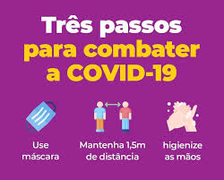
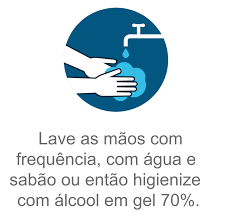

Prevenção sobre covid-19


Proteja a si mesmo e as pessoas ao seu redor conhecendo os fatos e tomando as precauções apropriadas. Siga os conselhos da autoridade local de saúde.
Para evitar a propagação da COVID-19, faça o seguinte:Proteja a si mesmo e as pessoas ao seu redor conhecendo os fatos e tomando as precauções apropriadas. Siga os conselhos da autoridade local de saúde.
Para evitar a propagação da COVID-19, faça o seguinte: